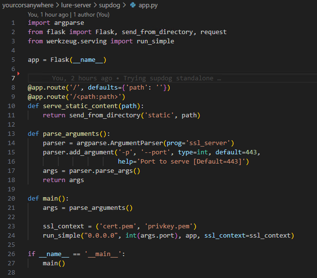
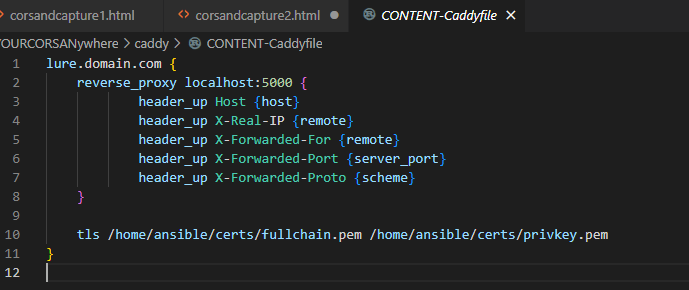
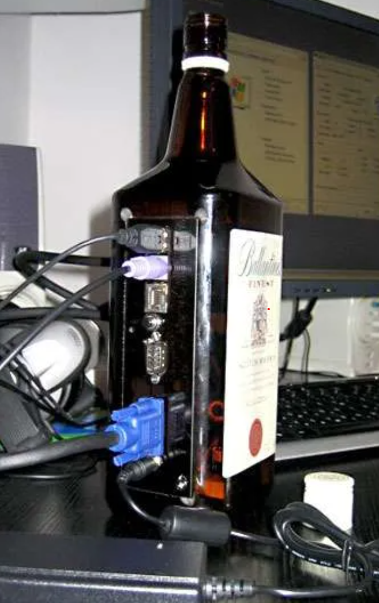
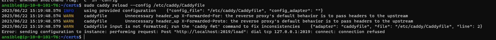
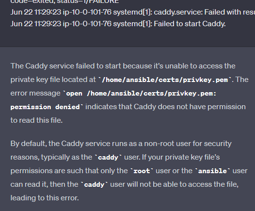
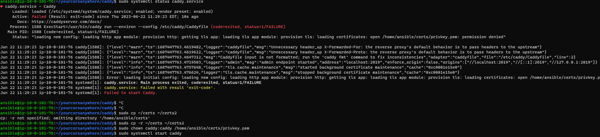

The 80/20 Rule
My friend once told me that projects follow an 80/20 rule. 80% of your most important effort will go into the lat 20% of the project. That 20% of the time accounts for 80% of the value of your project. I feel like I'm butchering the hell out of that but we're going to roll with it, feels right enough. The first 80 percent of the project is fun and productive and morale is high. Not that there won't be difficulties and stress or problems and redesigns, but the last 20% of a project is where it really sucks and where you learn the most. You're so over the project, you lose your shit at every git error and you're lost on troubleshooting. I think that was this past week and we're now close to the end. The last bit of the suck.
Where We're At
This is Part 2 of a series and you might be lost if you didn't read Part 1. Last time, we started working on way to keep our device codes alive for phishing. We got a working version of the lure, but ran into the problem of sending it with the Outlook client. We had an EC2 serving CORS solely for url redirection from a good domain. The domain had been working for email but hosting a site got blocked by web-filtering by categorization. We need to get our lure hosted on a better domain.
Dog Party
We ran up against a wall hosting our dynamic lure. Everything was working fine but client's web-filtering has the domain categorized as pornography. It was definitely not, and I requested re-categorization from that specific vendor but we need to pivot. I'm not sure what category my other domains are. Let's go take a look and see if one of the three I already bought for this will work. Here is a site you can use to check the category of a url: Url Category Checker All of my current ones are 'unknown' or 'parked domain'. Let's head back over to expireddomains.net. I highly suggest creating an account as you have way more options for searching. You can look for any TLD you want, .info is cheaper but .com seems more likely to be categorized. I still had to try for a bit.
Expired Domains
Let's look at a good example. Lemonwaterguide.com For a breakdown of what all goes into these popularity rankings: The Tale of Website Popularity Rankings: An Extensive Analysis | RIPE Labs
Categories Revisited
Prabably good enough for us, so let's see if it's categorized: It's categorized, but not into one that makes me hopeful we'll bypass corporate filters (unless it is the c-suite). Ultimately landed on a good reputation one categorized as "Religious", hoping that's a category that will provide some leeway. We'll re-deploy with terraform/ansible and get a new IP and hostname then point an A Record to it for our new holy rollin' domain. Once it's all in place, we'll have our contact try again and see they can access our page and see the lure.
HTTPs and Updog
Let's grab a certificate for this site, we will need it at some point, even if Updog does what we need. I recommend certbot and LetsEncrypt, but you can do it manually, too, if you hate yourself. Make sure you change the domain and sub to yours, run the command and make note of your cert path.
# Point a "www" record to your server and run certbot with http challenge for a letsencrypt cert
domain="lemonwaterguide"
sudo certbot certonly --register-unsafely-without-email -d www.$domain.com --standalone --preferred-challenges http --non-interactive --agree-tos
# Copy certs to our home folder for ease-of-use
mkdir ~/certs
sudo cp -r /etc/letsencrypt/live/www.$domain.com/* ~/certs/
ls ~/certs
 Note the similarities to the Capture server. Looks like we have a starting point if we feel the need to modify Updog, as well. In the morning our next objective is to test our new domain against the web-filter and the lure via Updog with SSL.
If that works, we'll register a certificate for the capture server and I'll show you how to deploy it. Once we have a fully encrypted setup that works for everything, we'll do one final teardown, resize the servers for cost then deploy again and finish the automation in the process.
Note the similarities to the Capture server. Looks like we have a starting point if we feel the need to modify Updog, as well. In the morning our next objective is to test our new domain against the web-filter and the lure via Updog with SSL.
If that works, we'll register a certificate for the capture server and I'll show you how to deploy it. Once we have a fully encrypted setup that works for everything, we'll do one final teardown, resize the servers for cost then deploy again and finish the automation in the process.
Whiskey in the Jar
Updog turned into more hassle than I had hoped for, and I recorded none of that. It occurred to me later that using CORS and Updog behind caddy as a reverse proxy would've been a better use of time. Trying that first, but I was just moving, and it may have turned into a rabbit hole we didn't need. I'm glad I did it, I learned a ton and will put some of what I made to use elsewhere. I decided to take it's source code and strip it down to do the two tasks we need: serve static content and using our own SSL certficates. We'll add strict paths to it after we prototype.  It's called supdog, for "simplistic updog" but at this point it's barely an app much less a clone of updog but I learned it from that project and I like stupid names. All you have to do is copy your "cert.pem" and "privkey.pem" to the supdog folder. Place static content in the same foldcer in "static" "content" and the filename. Perfect. That's our dynamic lure serving over SSL using our LetsEncrypt certificate.
Live Test 2
Set an A record for our server, and went to deploy again…but I could not get the page to work, even on a local server. I ended up creating a control file in the servers static folder using the flux-hosted CORS Anywhere: You can use this to troubleshoot with the Chrome dev tools (F12) Let's go update our small Flask server for this file: Back in our "lure-server.js" inside "\lure-server\cors-anywhere\" we need to make some changes Let's remove our headers, we can add them back if we need to later Test it live against a domain we want to redirect to. Place CNN.com at the end of your servers URL https://lure.trusteddomain.com/https://cnn.com Needed to do some troubleshooting using the Console in developer tools: I think the reason it displays on the live server in VS Code but not here is that mixed content policy. I guess now we need to get SSL working. I tried before, when working out the earlier parts of this and was unsuccessful. It started turning into a time sink and I decided to pull out and work on another part of the project. Now it's unavoidable and we don't really have an excuse anyway, except the time this all has taken.
Two Paths
We need an SSL proxy for this Cors-Anywhere. I think we need to look at the example we first saw in the Issues of the Cors-Anywhere repo. Someone was discussing this there when I was researching how to self host this thing. It didn't work out iof the box and I didn't have what it took to troubleshoot that. If I don't have it now I'm about to get it. The reason this was working before is because I was hosting the second cors service on Capture server. Having our resources on a separate domain prevented the mixed content error. If I was in a rush to use it, that would be my next goal, re-deploy that and edit the javascript for the hosted lure. Let's call that plan C, for cop-out, and leave it with our patient parts. Let's see if we can get this running over SSL. We need to edit the lure-server.js first (again) to run on port 8443. We're going to run Caddy a really cool reverse-proxy that will let us proxy traffic between our cors service and the world. We won't need the custom "straylight" headers and can run multiple services like flask and our node cors server like a backend on the same port. This works. It's a basic config. It adds the required headers we need. We could easily tell it here to add our custom headers if we want to. I'll put in the "caddy" folder in the repo and call it "CORS-Caddyfile" We have the proxy running on port 443 with our letencrypt certificate and the CORS service is being proxied successfully.
Updog Revisited
What we're going to try today is what I should have tried earlier this week, placing updog behind the same proxy as CORS. I was having trouble with the proxy itself more than anything at that point. Looking back over everything, we had updog working, but the domain was bad. In our haste, we moved towards a seemingly "better" solution that looked easy to implement. It looked easy, but web development is not a strong skill of mine, it's one I'm workingto improve. What this means for me is if I think the solution to my problem lies in a direction I'm "okay" at, I should probably double the effort and triple the amount of time I think it will take to make it work. That's definitely what happened here, I went at a new solution without knowing what complexity it was going to add, and my fundamentals were not strong enough in web to carry me through gracefully. Here I had a lot to learn, and the time it added was significant. Once again, the knowledge we gained was beyond worth it. If I had a team of operators waiting for it it would've been a nightmare, and we may have ended up with something hackier. We have the time, so we use the time. Okay, let's move this over to the lure server and try it with updog using "CONTENT-Caddyfile"  I took the CORS Caddyfile and made a version that should serve updog. We will have to tell it to add the ?view param later, I want to see it work in a simpler form first. Another lesson learned here is that I can't judge how much complexity a seemingly small thing can add yet. That will come with more experience but It doesn't have to display, if everything looks right with curl we will add that later. It's easier to add another block from a stable foundation. I feel like I spend a lot of time performing surgery like a ship in a bottle trying to troubleshoot back through things I've added.  Ensure caddy is running, start your backend cors service on 8443 in tmux session, start updog on 5000 using ssl in its own tmux session. You background a tmux session with "Ctrl+b" then tap "d". Tmux is like the vim of shells, capable of wizardy in good hands, a fumbly mess in others. It's starting to feel more natural now, for tmux at least.
sudo systemctl status caddy
tmux new-session -t cors
node yourcorsanywhere/lure-server/cors-anywhere/lure-server.js
# Ctrl+b +d to background tmux
tmux new-session -t updog
cd ~/yourcorsanywhere/dynamic-lures/
updog -p 5000 --ssl
# Ctrl+b +d to background tmux
Development Hell
Tried testing and it wouldn't work now. We had this working this morning, the same config is in place, we disabled the service, tried to load various config files manually and still got error, and rebooted because that's what you do when you're stuck. Now…  We lost some time to troubleshooting this. What it was? Permission on the certificate was wrong. Caddy needed permissions. These error messages aren't very helpful. ChatGPT really helps you parse these logs and make sense of things.  It can help you figure out what to google, sometimes it can answer you directly if the problem is simple or seen often enough. 
sudo chown caddy:caddy /home/ansible/certs/privkey.pem
sudo mv /etc/caddy/Caddyfile /etc/caddy/working.Caddyfile && sudo cp ~/yourcorsanywhere/caddy/Caddyfile /etc/caddy/Caddyfile
sudo systemctl restart caddy
sudo systemctl status caddy
Check out Part 3:

CORS and Capture Part 3: Automate, Automate, Such a Simple Plan